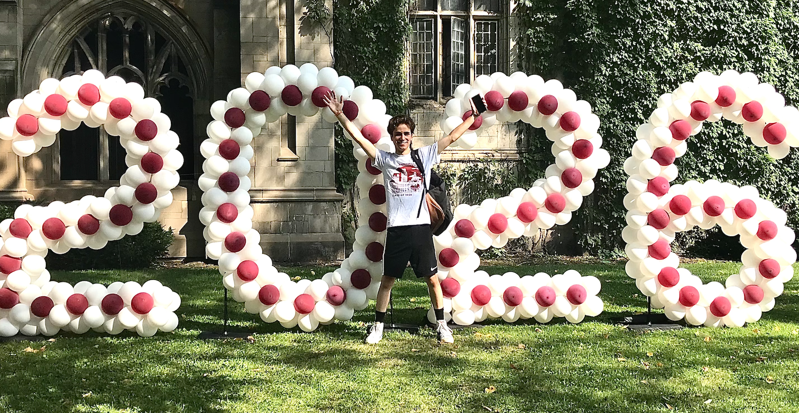
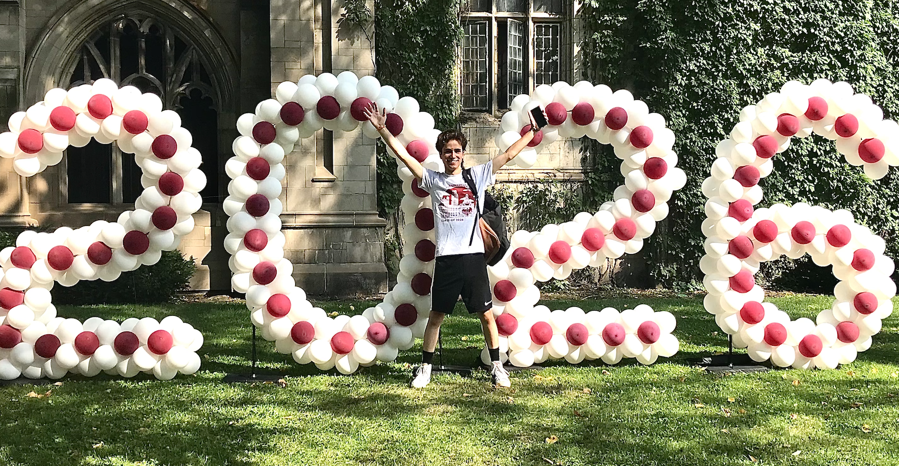

Hello
|
Summary and Outline:
Hello! I'm Zephaniah, a first-year student at the University of Chicago. I am currently studying comuter science but am also interested in classical studies, philosphy, and art. As a curious person, pursueing so many subjects and activities, it was difficult to narrow this page down. So instead of trying to include everything, I broke this page into 3 main categories: computer science, art, and effective altruism. If you are interested in reading about only one or two of these subjects, feel free to skip ahead. This page can be read in any order.
 

Computer Science:
My love for computer science began with a much more general love of
engineering and an appetite for invention. As a child, I built
things out of anything I could get my hands on. I made cars out of
legos, forts out of leaves, costumes out of balloons, and furniture
out of scrap wood I found digging through garbage.
In 6th grade, I joined my middle school’s VEX robotics club. Because
I was a beginner, I was placed on a team with five other kids who
also had limited experience building robots. But despite our lack of
prior experience, we shocked everyone and went on to win the state
championship. In retrospect, I realize that it didn’t really matter
that we didn’t go into robotics with a lot of technical knowledge
because we had what really mattered – a restless desire to create.
That same desire, that made me succeed in robotics, is what made me
want to learn how to code. I was fascinated by the things that could
be created with code and excited by the future I could help build by
using code responsibly. But when I began learning to program, I
found myself in the same position I was in when I started robotics
in middle school. I was almost a complete beginner, overwhelmed by
what I didn’t know. But once again, I overcame my lack of prior
experience with hard work and dedication. I spent countless hours
self-studying web development and learning the basics of programming.
I enrolled in programming classes in high school and college and
mastered the required material and more. Through this experience, I
learned the principles of coding (with Java and Python) and the
fundamentals of front end web development (with HTML and CSS).
Over the time I have spent learning to program, I have written lots
of code in a variety of languages. But this website is a special
milestone for me because it is my first complete project I have made
available to the public. For more information about this website
click
here
to be redirected to the “About this Site” page.
Art:
Since I was old enough to hold a pencil or paintbrush, I have been fascinated by art. As a toddler, I spent hours drawing and painting pictures that vaguely represented people, animals, and flowers. However, as I got older, my art became increasingly sophisticated. I improved my drawing and painting skills and began experimenting with different concepts, subjects, and mediums.
In fourth grade, I started making balloon animals. I began with
simple designs such as dogs and flowers, but as I improved my
skills, I moved on to creating more advanced sculptures, competing
in national competitions and making balloons professionally. Over
the years, I have mastered all common balloon-twisting techniques
and have made costumes, expansive displays, and clothing. My most
proud accomplishment in balloon twisting however, is that by making
so many balloons for so many people, I believe that I have genuinely
made the world a little happier.
Although I spent lots of time making balloons, I still pursued a
traditional art education. In high school I took classes in drawing,
painting, and wheel throwing. I have learned how to apply important
artistic concepts to my work and have studied a number of artists
and countless pieces. Although this was an extremely useful
experience, learning how to make balloons was equally essential to
me becoming a great artist. Because I had more than a traditional
art education, I learned how to not only embrace the beauty in the
world through focused study, but also how to share it by making
balloon animals.
Effective Altruism:
Effective altruism is the idea that we can and should use evidence
and reasoning to find the most impactful ways to improve the world.
This idea plays out in a number of ways: effective altruists donate
money to high impact charities, dedicate their careers to solving
pressing problems, and do global priorities research on which
actions cause the most positive impactful.
Effective altruism is distinctly different from other social justice
movements because it is driven by objective thinking and high
quality research. Additionally, it encourages people to reject their
own biases and focus on the values and preferences of the people in
the communities they are trying to help. For example, many effective
altruists support Give Direct, a charity that provides universal
basic income to people living in poor countries. This charity does
not only stand up to extensive scrutiny but it also has the values
of their recipients built into the structure of the organization.
Because Give Direct gives out unconditional cash transfers,
recipients are able to determine what they and their family need
the most, independent from the biases and preconceptions of the
people running the charity.
In my own life, I discovered the value of community-involvement in
my own acts of community service. In high school, I volunteered at
Camp Anokijig, a sleepaway camp in Wisconsin. Because I had spent
years there as a camper, as a staff member, I was familiar with the
needs, traditions, and culture of the camp. My understanding of the
Camp Anokijig community ultimately enabled me to support the
children at the camp in more meaningful ways and increase the
positve impact I had on the camp.
Similarly, when I finished high school I wanted to give back to my
community so I took on a job running a day camp at my town’s park
district, the Park District of Oak Park. The camp was open to
everyone, but many of the parents that signed their kids up
needed to work during the day and could not afford babysitters.
Because I had grown up in the community, I understood that programs
like these allowed families to be financially stable and that the
quality of these types of programs were essential to the wellbeing
of the community.
Going forward, I hope to build on my experience at Camp Anokijig and
the Park District of Oak Park and increase my impact by working for
programs that are even more effective. In the future, I hope I will
be able to work on issues such as global poverty, animal welfare,
nuclear security, or AI risk. I understand that this is a process,
and that I may need to work in a variety of different kinds of jobs
to build up important skills. But no matter what jobs I take or what
areas I choose to work in, my goal will always be the same – to
genuinely improve the world.